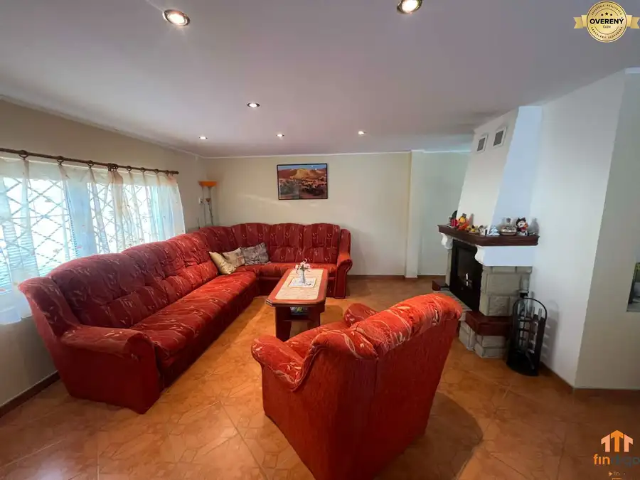
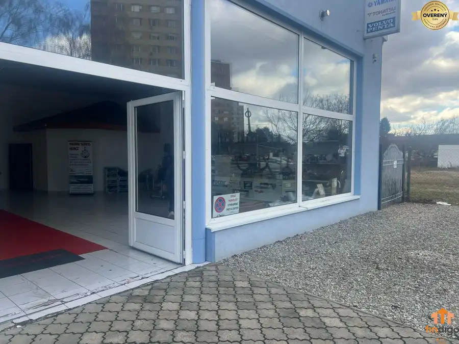
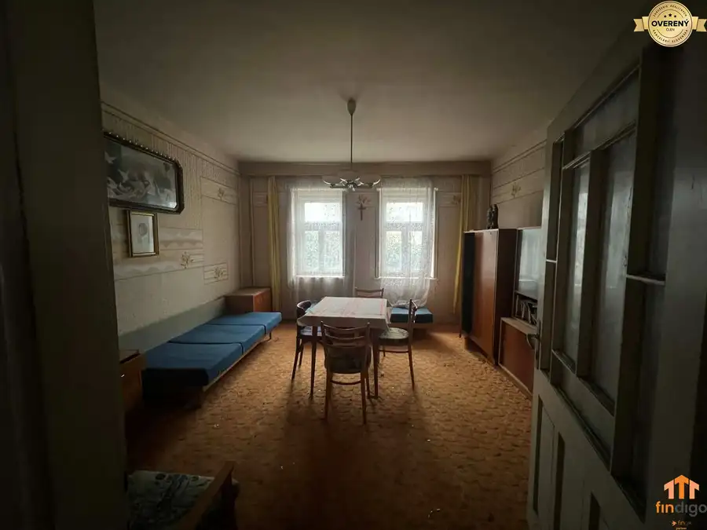

PREDAJ - Rodinný dom s investičným potenciálom - Nové Zámky
Nové Zámky
- Dispozícia7-izbový
- Plocha346 m²
- Poschodie0. z 1
- Stavčiastočne prerobený
O nehnuteľnosti
Spoločnosť Findigo Vám na predaj priestranný 7-izbový rodinný dom v jednej z najvyhľadávanejších lokalít mesta Nové Zámky. Nehnuteľnosť je vhodná na komfortné rodinné bývanie, dvojgeneračné bývanie, ale zároveň predstavuje výbornú investičnú príležitosť – napr. na sídlo firmy, ambulanciu, prenájom alebo kombináciu bývania a podnikania.
Základné informácie
• úžitková plocha: 346 m²
• pozemok: 4 áre
• materiál: tehla
• počet izieb: 7
• stav: čiastočná rekonštrukcia
• dom je trojpodlažný: suterén, prízemie, poschodie
Dispozícia
Suterén (I.PP):
• schodisko na prízemie
• obytná miestnosť s ústredným kúrením a krbom
• chodba, skladové priestory, dielňa
• wellness zóna – bazén a sauna (určené na rekonštrukciu)
• garáž
• kotolňa s plynovým kotlom
• práčovňa
Wellness časť ponúka výrazný potenciál na zvýšenie hodnoty nehnuteľnosti po rekonštrukcii – možnosť súkromného wellness, relax zóny alebo komerčného využitia.
Prízemie (I.NP):
• vstupná predsieň
• samostatné WC s umývadlom
• priestranná hala s krbom a výstupom na terasu
• kuchyňa s jedálenskou časťou
• špajza a miestnosť s umývadlami
• spálňa s klimatizáciou
Poschodie (II.NP):
• 2 spálne
• kuchyňa s jedálenskou časťou
• kúpeľňa s vaňou, 2× umývadlo, WC
• balkón
Technický stav a vybavenie
• dom je zateplený, hliníková a keramická krytina
• viackomorové hliníkové okná (poschodie – vonkajšie rolety)
• hliníkové vchodové dvere
• pôvodné francúzke okná na prízemí
• plynové ústredné kúrenie, krb
• klimatizácia v spálni
• zimná záhrada / skleník so studňou
Inžinierske siete
• elektrina (odpojené)
• plyn (odpojené)
• verejný vodovod
• studňa
• internet
Parkovanie
• 2× garáž (vrátane samostatnej pristavanej garáže o výmere 36 m² so súpisným číslom) elektrické otvaranie
Prečo je táto nehnuteľnosť výbornou investíciou?
• prestížna a stabilná lokalita s vysokým dopytom
• veľkorysá úžitková plocha
• wellness zóna ako potenciál na zhodnotenie
• vhodné na bývanie, podnikanie alebo prenájom
• kompletná občianska vybavenosť v bezprostrednom okolí
Cena : 237 999€
Možná aj výmena za menší rodinný dom (3–4 izbový) s menším pozemkom plus doplatok, v pokojnej lokalite – Trávna ul. a blízke okolie.
Neváhajte ma kontaktovať pre viac informácií alebo osobnú obhliadku.
Miroslava Líšková – realitná maklérka
Parametre
| Balkón | áno |
|---|---|
| Bazén | interiérový |
| Bezbariérový prístup | nie |
| Dátum zverejnenia | 4. 6. 2026 |
| El. napätie | 230V |
| Energetický certifikát | áno |
| Garáž | áno - 2 autá |
| Inžinierske siete | áno |
| Kanalizácia | áno |
| Klimatizácia | áno |
| Krb | áno |
| Káblová televízia | áno |
| Lódžia | nie |
| Odvoz odpadu | áno |
| Okná | hliníkové |
| Parkovanie | áno |
| Pivnica | áno |
| Plyn | áno |
| Poschodie | prízemie |
| Postavené z | tehla |
| Počet izieb | 7 |
| Počet poschodí | 1 |
| Predzáhradka | nie |
| Prístupová cesta | asfaltová cesta |
| Rozloha pozemku | 403 m² |
| Stav | čiastočne prerobený |
| Strecha | pôvodná |
| Terasa | áno |
| Terén | rovina |
| Voda | studňa a vodovod |
| Vykurovanie | vlastné |
| Zariadenie | nezariadený |
| Zastavaná plocha | 115 m² |
| Zateplený objekt | áno |
| Úžitková plocha | 346 m² |
Kde to je
Mohlo by Vás zaujímať

Chaty a chalupy10 104 000 €PREDAJ - Zrekonštruovaná rekreačná chata - Chľaba Chľaba 4-izbový85 m² Spoločnosť Findigo Vám ponúka na predaj kompletne zrekonštruovanú a zateplenú rekreačnú chatu nachádzajúcu sa v pokojnej lokalite v obci Chľaba s…
Nebytové priestory10 4 000 €PRENÁJOM - Komerčný priestor na podnikanie – Štúrovo, Jesenského Štúrovo 144 m² Ponúkame na prenájom multifunkčné komerčné priestory vhodné pre kanceláriu, obchod, autodielňu alebo menšiu výrobnú prevádzku. Priestor je ideálny aj…
Rodinné domy10 41 300 €PREDAJ - Rodinný dom na rekonštrukciu s veľkým pozemkom – Kuraľany Kuraľany 3-izbový130 m² Spoločnosť Findigo Vám ponúka na predaj rodinný dom s úžitkovou plochou 130 m² nachádzajúci sa na priestrannom pozemku o celkovej výmere 1 000 m².…